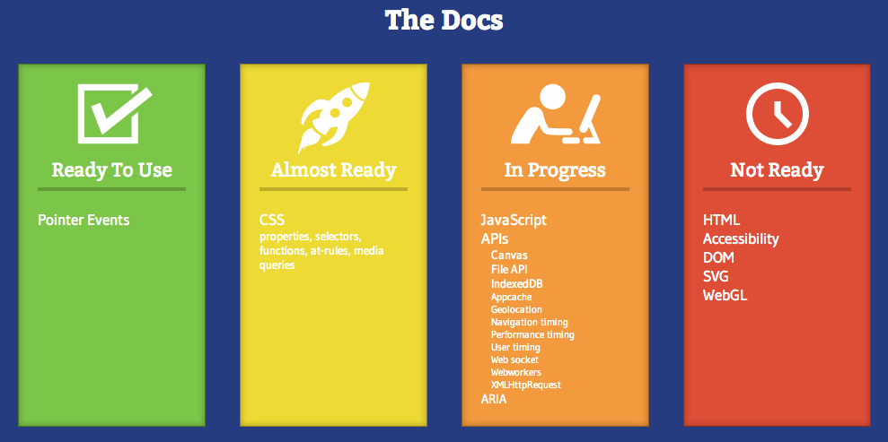

Thanks to our sponsor:
Help.com
Next-generation customer service software
Thanks to our sponsor:

10-week Python and HTML/CSS training courses
News from the Bleeding Edge
Browser Pop Quiz
Last version check — July 2014 (last month):
Browser Pop Quiz
As of August 26, 2014:
Chrome Highlights
Version 37 (Aug 26th)
- DirectWrite support on Windows (upgraded from GDI, promises improved font rendering)
- 64-bit Windows support
- Disabled support for showModalDialog (will be removed May 2015)
- $51k in bug/security bounties ($30k to a single researcher)

Firefox Highlights
Version 32 (Preview, still in beta)
- New HTTP caching (improved page render performance)
- New ES6 Array methods: Array.from, Array.copyWithin
- position: sticky enabled by default (details)
- Web Audio Editor (examine/edit an audio context and visualize its output)

W3C Standards for Mobile Web Apps: Current State & Roadmap
http://www.w3.org/2014/07/mobile-web-app-state/
Summarizes the various technologies developed in W3C that increase the capabilities of Web applications,
and how they apply more specifically to the mobile context.
Summary of specs by technology category:
W3C Standards for Mobile Web Apps: Current State & Roadmap
http://www.w3.org/2014/07/mobile-web-app-state/
Summary of specs by W3C status:
| Emerging work |
First Public Working Draft |
Last Call for Feedback |
Candidate Recommendation |
- Wake lock API
- Geofencing API
- Named web sockets
- Web Bluetooth API
|
- Service workers
- WOFF 2.0 (web font format)
- CSS font loading
- Beacon API
- Media queries level 4
|
- Canvas API
- Ambient light events
|
- HTML5 (includes a lot of stuff)
|
WebPlatform.org
http://www.webplatform.org/
The latest information on how to use the technology that runs the web — HTML, CSS, JavaScript and more.
A crowdsourced, work-in-progress (early) resource for documenting web standards
Currently pushing for JavaScript-focused contributions

Swift
Swift is a new object-oriented programming language for iOS and OS X development.
Swift is modern, powerful, and easy to use.
Introduced at WWDC in June, still in development
JS-like syntax, compiled, modern features, compatible with Objective-C

Swift
http://realm.io/news/swift-for-javascript-developers/
Great overview of Swift for JS developers (screencast + code examples)
// JavaScript
function Car(model){
this.model = model;
}
Car.prototype.drive = function() {
return 'Driving my ' + this.model;
}
// Swift
class Car {
var model = ""
func drive() -> String {
return "Driving my " + model
}
}
Meteor
https://www.meteor.com/
- Version 0.9.0 just released
- Primary focus: overhauled packaging system
- Moving steadily toward 1.0

Ampersand.js
http://ampersandjs.com/
New Backbone-inspired, modular JS framework
"Tiny modules" philosophy (a la Node), minimal DOM manipulation
Mobile-optimized, offline-first

BareKit
http://a2labs.github.io/barekit/
A Bare Minimum Responsive Framework
- Responsive layout grid
- Media query mixins
- Really basic, unstyled components (accordion, dropdown nav, modals)
- Utilities for positioning, clearing, show/hide, etc.
←
→
/
#